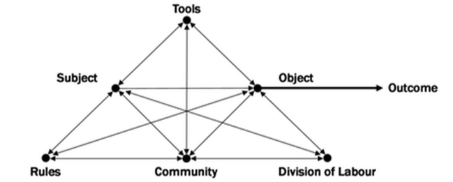
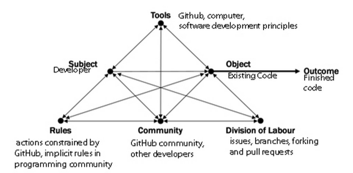
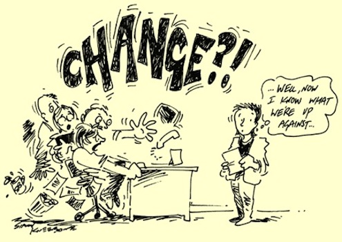
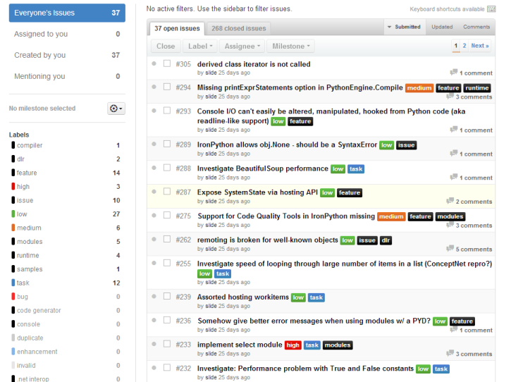
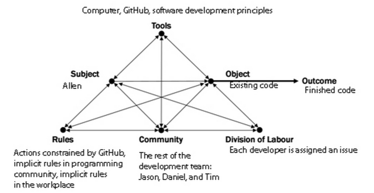

Activity theory looks at the relationship between a subject and the object, which is called “activity”. In each activity, the subject has needs which direct the subject towards his object. Subjects frequently use mediating artifacts in an activity in order to reach their objective. After using a mediating artifact, subjects can internalize the mediation and no longer need the external tool. Externalization can also occur in an activity, where an internal process becomes an external one. Activities can be broken down into a hierarchy. Activities are composed of actions, which are composed of operations. Activities correspond to the motive, actions correspond to goals, and operations correspond to conditions.
In the context of GitHub, the subject could be a developer and the object would be to create new code. Mediating artifacts could be the computer, the internet, or GitHub itself. Learning the rules of software programing would be an example of internalization, whereas writing code would be an example of externalization. The overall activity would be creating new code, which could be broken down into actions, such as coding particular features. The actions could be broken into operations, such as typing.
Engestrom’s activity system model expands activity theory to take the community into account. The relationship between the subject and the community is mediated by rules and the relationship between the community and the object is mediated by the division of labor.

Applying this model to GitHub, we can identify the following elements:

Engestrom’s framework also includes contradictions, which arise in an activity system as it develops. A first level contradiction is between one component on the diagram, a second level contradiction is between two component, a third level contradiction is between the existing activity system and its potential, and a fourth level contradiction is between an activity system and other activity systems. We can apply this to GitHub in the following ways:
Developers on the same team disagree on how to code a particular feature.
A developer doesn’t understand how to use GitHub.

A development team is resistant to changing the features that have already been programmed.
Two different development teams submit different coding solutions for the same problem.

In the scenario, the components of the activity network are similar to those identified previously in reference to Engestrom’s model.

A first level contradiction occurs when the two versions of the code are merged and errors are found. However, GitHub helped to remedy this contradiction and continue to work towards their objective. All the members of the team gained a better understanding of GitHub through this project. Allen and Jason learned that when merging code, conflicts can arise.
GitHub aids the division of labor. Projects can be broken into issues, which can then be assigned to developers. GitHub has rules to restrict community actions. These rules help with communication and mediate the relationship between subject and community. They also may lead to fewer contradictions. GitHub also helps with third level contradiction as it breaks up huge tasks into smaller commits so that change may not feel as significant or daunting. Activity Theory also helps to reveal how components in a network develop over time as a result of activity.